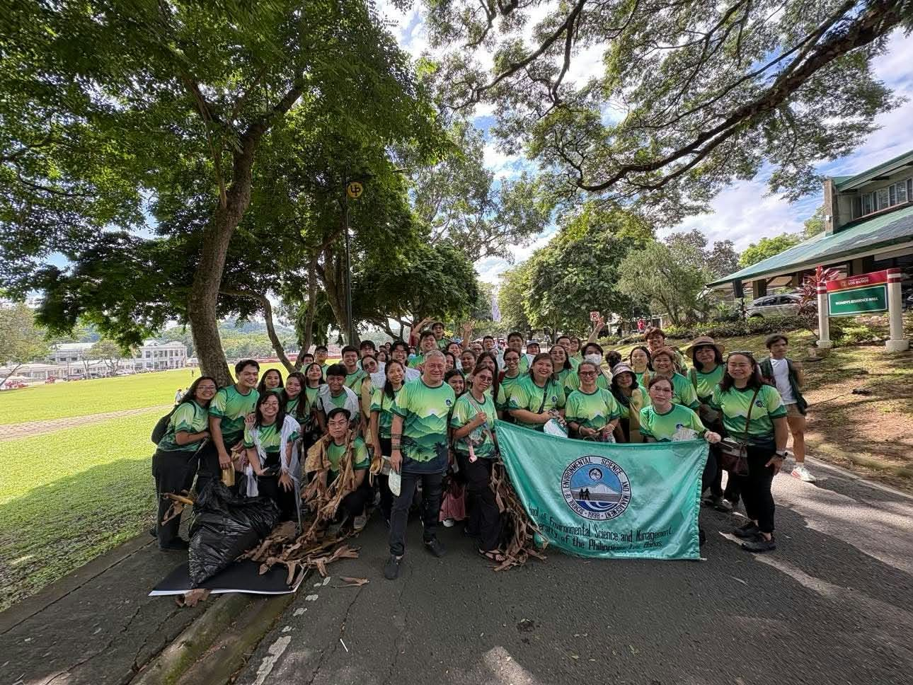
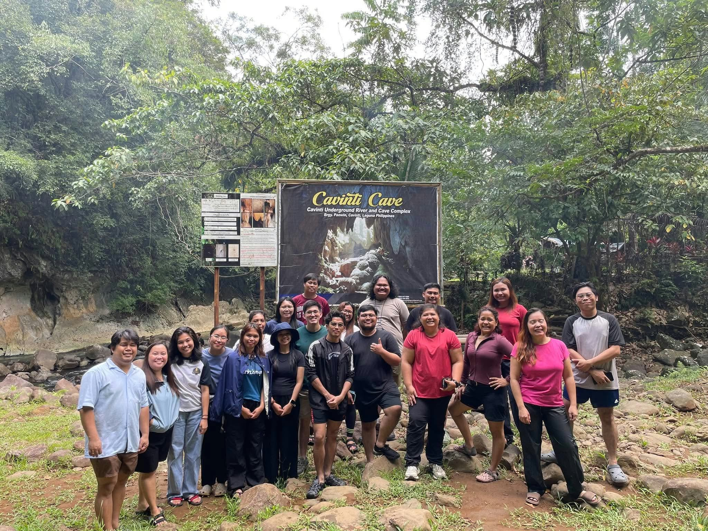

University of the Philippines Los Baños
Master of Science in Environmental Science
ENVIRONMENT · RESEARCH · SUSTAINABILITY
Hello, I'm
An aspiring environmental professional interested in turning environmental data and research into meaningful visual stories that help people better understand the world around them.
A LITTLE ABOUT ME
Protecting nature also means understanding the people whose lives depend on it.
I’m interested in finding meaningful ways to make environmental information easier to understand through research, maps, and visual storytelling. I enjoy exploring how data can reveal patterns, explain environmental changes, and show the connections between people and nature.
For me, visualization is more than presenting information, it is a way to turn complex ideas into something people can see, understand, and use. I hope to continue developing this interest by combining environmental science, spatial analysis, and clear visual communication to support better environmental understanding and decision-making.
MY ACADEMIC JOURNEY
Choose a school or credential to explore its photos and details.
Master of Science in Environmental Science
Bachelor of Science in Environmental Science
Graduated Cum Laude.
Civil Service Exam Passer · Basic PCO Training
GRADUATE STUDIES · 2026–PRESENT
Master of Science in Environmental Science
image/uplb.jpg
" hidden>image/uplb-2.jpg
image/uplb-3.jpgimage/uplb-4.jpgimage/uplb-5.jpgGraduate studies focused on environmental systems, research, and the relationship between people and the environment.
UNDERGRADUATE STUDIES
Bachelor of Science in Environmental Science · Cum laude
image/caraga-state.jpgimage/caraga-state-2.jpgimage/caraga-state-3.jpgimage/caraga-state-4.jpgimage/caraga-state-5.jpgBuilt a foundation in environmental management, environmental assessment, research, and natural resource conservation.
CERTIFICATES
Certificates in pollution control training and public service.
image/basic-pco-training-certificate.jpgimage/civil-service-certificate.jpgimage/certificate-photo-3.jpgimage/certificate-photo-4.jpgimage/certificate-photo-5.jpgPRACTICAL EXPERIENCE
Environmental compliance, field exposure, documentation, and organizational work.
WNC · Dinagat Islands, Philippines
Supported environmental compliance and documentation in a mining operations setting.
Environmental Science Intern · Butuan City
Gained exposure to environmental monitoring, fieldwork, and regulatory processes.
PAESS Assistant Executive Secretary · 2024–2025
Supported organizational communication, documentation, coordination, and administrative activities.
CSU CEAS Undersecretary · 2023–2024
Gained experience in student leadership, coordination, and organizational support.
WHAT I BRING
A growing set of environmental, technical, and professional skills developed through study, fieldwork, and work experience.
Tools and methods for spatial analysis, research, and documentation.
Knowledge and experience relevant to environmental practice.
Ways I contribute to collaborative and field-based work.
Proficiency is labeled only where specified; other skills are listed without a rating.
SELECTED ACADEMIC WORK
Selected topics reflecting my interests in environmental systems, communities, and sustainable development.
Explores possible connections between seasonal mining, environmental conditions, and coastal community livelihoods.
Examines how land-cover patterns and fragmentation relate to floral and faunal diversity at the farm.
Considers how local stakeholders view potential environmental, social, economic, and governance implications.
Explores insect diversity and the potential for insect-focused nature tourism.
A case study currently in development.
GRADUATE RESEARCH
Publication status not provided; this entry is not presented as published research.
Explores how seasonal mining activities may relate to environmental conditions and community livelihoods. The research direction considers livelihood sources, dependence on natural resources, community experiences, and perceived environmental and socioeconomic outcomes across selected coastal communities.
Social-ecological systems approach. Specific methods, datasets, and software: To be added.
Findings, maps, charts, and recommendations: To be added when available.
Individual or group project and specific contributions: To be added.
LANDSCAPE ECOLOGY
Publication status not provided; this entry is not presented as published research.
Examines land-cover patterns and landscape fragmentation, and considers how landscape structure relates to floral and faunal diversity at Nabunturan Balik Kinaiyahan Farm.
Uses secondary spatial data and landscape metrics to characterize land-cover types and assess fragmentation patterns. Specific GIS software and datasets: To be added.
Specific findings, maps, charts, and recommendations: To be added.
Individual or group project and specific contributions: To be added.
WASTE MANAGEMENT
Publication status not provided; this entry is not presented as published research.
Explores stakeholder views on potential environmental, social, economic, and governance implications of a proposed waste-to-energy facility in Calauan, Laguna.
The proposed approach considers household perspectives alongside insights from local government, businesses, and community groups. Methods, data collection, and tools actually used: To be added.
Findings, analyses, and recommendations: To be added when available.
Individual or group project and specific contributions: To be added.
BIODIVERSITY
Publication status not provided; this entry is not presented as published research.
Project focus beyond the title: To be added.
Methods, software, datasets, and analytical approaches: To be added.
Findings, species records, maps, charts, and recommendations: To be added when available.
Individual or group project and specific contributions: To be added.
CASE STUDY
Publication status not provided; this entry is not presented as published research.
Case study topic, purpose, and scope: To be added.
Methods, data, assumptions, and tools: To be added.
Analysis, findings, and recommendations: To be added when available.
Individual or group project and specific contributions: To be added.
LET'S CONNECT
I welcome opportunities related to environmental research, sustainability, environmental management, and collaboration.
Email me